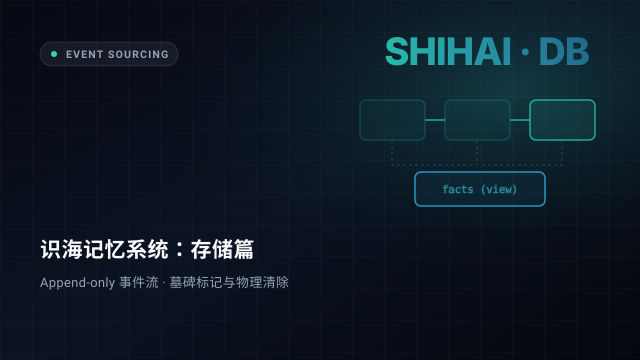

本地记忆存储实战：Append-only 事件流、墓碑机制与真正的物理遗忘
围绕桌面助手记忆系统的本地持久化需求，介绍如何仅用 Python 标准库与单文件 SQLite 落地存储层：涵盖不可变事件流、双时间线事实表设计，以及覆盖数据库与各级日志文件的彻底物理清除。

选型：为什么坚持“纯标准库 + SQLite”
为伴随用户长久运行的端侧记忆系统选型时，技术方案主动避开了当前社区常见的时髦技术栈：
- 不引入独立向量数据库：向量只是辅助检索的数学坐标，不适合作为唯一数据存档。数据库只持久化原始文本与结构化属性，向量匹配放在运行时按需计算，日后更换本地 Embedding 模型也无需迁移底层数据。
- 杜绝三方黑盒依赖：全套存储基于纯 Python 标准库配合单文件 SQLite（开启 WAL 预写日志模式）。需要持久陪伴的数据，应优先选用经过数十年验证、向后兼容性极高、零额外运维成本的成熟基石。
- 严格遵循本地文件纪律：数据统一固化在程序工作目录下的专用存储路径中，绝不向系统 C 盘隐式丢弃缓存或数据文件。
目录拓扑与职责分工
data/
├── memory.db # SQLite 核心库（WAL 模式，伴生 -wal / -shm）
├── memory_raw/ # L0 原文日志：按日分割的 jsonl 审计源
├── memory_shadow.jsonl # 影子抽取日志：候选事实转正前的暂存队列
├── memory_md/ # 人读镜像层：按分类组织的只读 Markdown 副本
├── memory_snapshot/ # 每晚滚动生成的数据库快照
├── backup/ # 滚动保留 7 份的 SQLite 在线备份
└── export/ # 用户导出与迁移数据包
各层级职责边界清晰：memory_raw 记录真实会话原貌，memory_shadow 构成信任门禁缓冲池，memory_md 提供随时可审查的人类可读镜像，而 memory.db 承担结构化索引与运行时计算。
核心表结构设计
1. events 表：不可变的权威真相
CREATE TABLE events (
id INTEGER PRIMARY KEY AUTOINCREMENT,
ts REAL NOT NULL,
kind TEXT NOT NULL,
fid TEXT, -- 关联事实 ID
data TEXT -- 变更全量载荷 JSON
);
库内所有的业务行为（添加、提及、失效、顶替、情绪着色、彻底遗忘）皆为单向追加的不可变事件。每条事件都自带完整的数据快照，重放时无需借助外部组件或缓存，即使主表损坏也能独立恢复一致状态。
其中，forget_all 构成全局重放的分水岭事件（清空旧记录后写入一条新的起点事件）。重放引擎始终从最近的一个分水岭节点向后折叠，彻底切断历史痕迹对当前状态的影响。
2. facts 表：状态折叠视图与双时间线
facts 表作为事件流计算后的快速只读视图，承载 23 个维度的状态：
- 双时间线机制：显式区分
first_ts / last_ts（系统记录该事实的时序）与valid_at / invalid_at（该事实在客观现实中的有效时间区间）。这使得系统能够精确理解“用户从何时起变更了生活习惯”这一类具有现实时效性的事实。 - 三态生命周期：严格标定
active（当前有效）、tombstone（已标记软删除，用户反悔时仍可找回）与superseded（已被新事实取代），状态流转均可追踪。
3. edges 表：轻量拓扑联想
CREATE TABLE edges (
a_fid TEXT,
b_fid TEXT,
strength REAL,
ts REAL,
rel TEXT,
PRIMARY KEY(a_fid, b_fid)
);
通过三类轻量拓扑边连接孤立事实：
- 共现边（co）：同一对话共同命中的记忆，强化联想权重；
- 语义边（assoc）：余弦相似度超出 0.62 的强关联对，每个节点仅保留最强邻居，防范拓扑膨胀；
- 共属性边（coattr）：基于分类前缀的弱关联关系，纯 SQL 原生聚合，零模型推理开销。
遗忘的工程含义：从墓碑到真正的物理抹除
隐私删除在系统底层并非单一操作，而是被细化为三档严谨的语义阶梯：
| 用户口令 | 数据库内部行为 | 外部文件连带动作 | 恢复能力 |
|---|---|---|---|
| “忘掉关于 X 的事” | 状态打上墓碑标记（valid 结束） | 镜像 Markdown 文件同步更新状态 | 完全可逆（支持原词找回） |
| “忘了吧” | 清空最近会话上下文缓存 | 数据库与日志保持原状 | 不影响长期记忆 |
| “忘了我吧” | facts 与 events 物理全量 DELETE + VACUUM | 原文日志、影子日志、快照导出物全部同步删除 | 彻底不可逆 |
在许多系统设计中，“删除”往往只是修改了主表的一行标志位，但在底层的原始请求日志中仍赫然保留着用户的原话记录——这不叫遗忘，只是嘴上说忘。
识海在执行 forget_all 时，会同步清理磁盘上全部按日切分的 jsonl 原文日志、影子暂存与快照备份，并通过自动化测试断言验证：执行后磁盘上不存在任何可供复原原话的物理文件碎片。
核心难点与工程排障
- 影子队列的非固定淘汰策略：影子日志并非简单的按天滚动。清理程序按行执行审查：只有当该行的候选事实全部完成裁决且超出 7 天后方可安全剔除；若仍有等待转正的条目，该记录将被永久保留，防止待办队列意外丢失。
- 人读镜像层的单向隔离：早期曾尝试人读 Markdown 与 SQLite 双向同步，但文件文本格式的微小差异极易导致解析冲突与脏写。最终确定“库向文件单向投影、修改通过指令或专用视图”的纯单向原则，彻底消除双源竞争。
- 多进程并发防阻塞：在 WAL（预写日志）模式下，前台可视化面板等只读工具与主守护进程实现互不阻塞的一写多读；写事务统一施加 30 秒 busy timeout 与
BEGIN IMMEDIATE锁排队机制，平稳支撑批处理后台与前台并发。
结论
存储架构的本质，是决定“什么该长久留存、什么该自然过期、什么必须彻底擦除”。凭借 append-only 事件流作为权威源、双时间线厘清事实跨度，以及严格匹配磁盘状态的物理删除机制，轻量单文件架构同样能构筑起可靠且令人放心的端侧长程记忆底座。